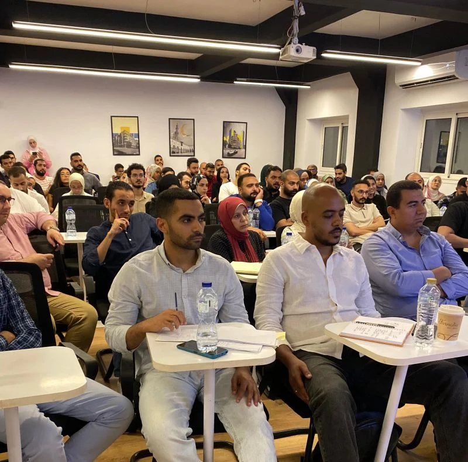
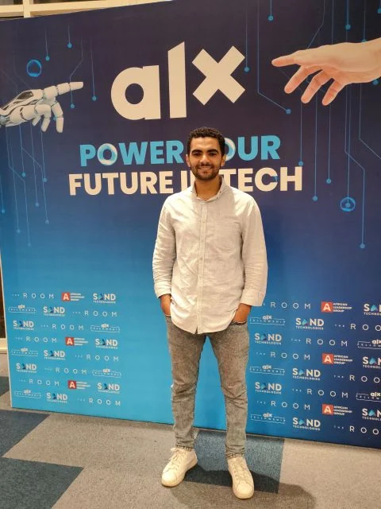
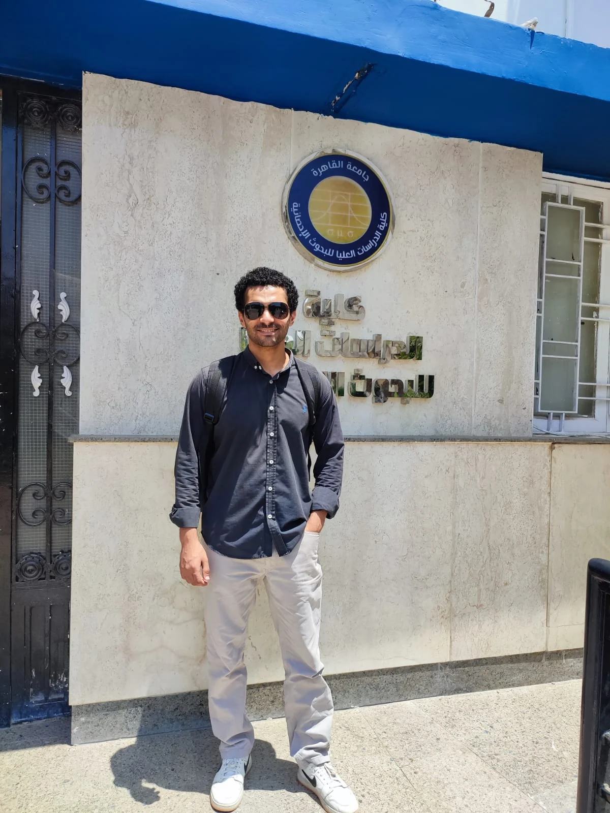

Business Intelligence
Interactive dashboards, semantic models, DAX measures, Power Query transformations, Power BI Service, app publishing, and Row-Level Security.
Cairo, Egypt · Open to high-impact analytics opportunities
Senior Market Research and Data Analyst building Power BI solutions, analytical databases, market-entry studies, and automated reporting workflows for commercial and operational teams.
About me
I combine a foundation in mathematics and statistics with hands-on capability across business intelligence, database design, automation, and market research. My work translates export, sales, customer, logistics, and ERP data into practical answers for managers and business teams.
I am especially interested in the space between data engineering and decision-making: structuring reliable data, building intuitive analytics, and presenting the outcome in a way that makes the next action clear.
Expertise
A practical toolset covering the full analytics workflow.
Interactive dashboards, semantic models, DAX measures, Power Query transformations, Power BI Service, app publishing, and Row-Level Security.
Relational data models, efficient SQL queries, Python-based data processing, reporting automation, and repeatable analytical workflows.
Market-entry assessment, competitor analysis, pricing, market share, customs data, export routes, and executive-ready commercial insights.
Customer segmentation, purchase-cycle analysis, logistics and shipment monitoring, ERP integration, and performance reporting.
Beyond the dashboard
A visual record of the experiences that sharpen my business context and strengthen the way I approach data.

Contributing to a professional learning conversation related to data analytics at ALX.

Attended a Business Development Community meetup focused on practical applications of AI and Agentic AI.

Attended a technical event exploring probabilistic thinking, statistics, machine learning, and AI.

Professional training experience focused on developing practical cement-industry knowledge beyond the dashboard.

Completed the General Cement Course at Amreyah Cement, connecting analytical work with a deeper understanding of cement operations and industry context.
Engaging with professional development environments and Egypt's employment ecosystem.

Professional development through the ALX Freelance Career Maker program.

Professional development through the ALX Freelance Career Maker program.

Completed the Computer Science diploma at Cairo University's Faculty of Graduate Studies for Statistical Research in August 2026.
Experience
Leading BI integration and delivering export, pricing, customer, logistics, and market intelligence solutions for the Export Department.
Built sales dashboards and automated reporting workflows while improving data structures, controls, and business visibility.
Completed end-to-end analytical workflows using Excel, Python, and Power BI, from data collection and cleaning to visualization and reporting.
Education
Cairo University
Zagazig University
Selected training
Forage
ALX Egypt
Coursera
Let’s connect
I am interested in roles and collaborations involving business intelligence, data integration, commercial analytics, and market intelligence.